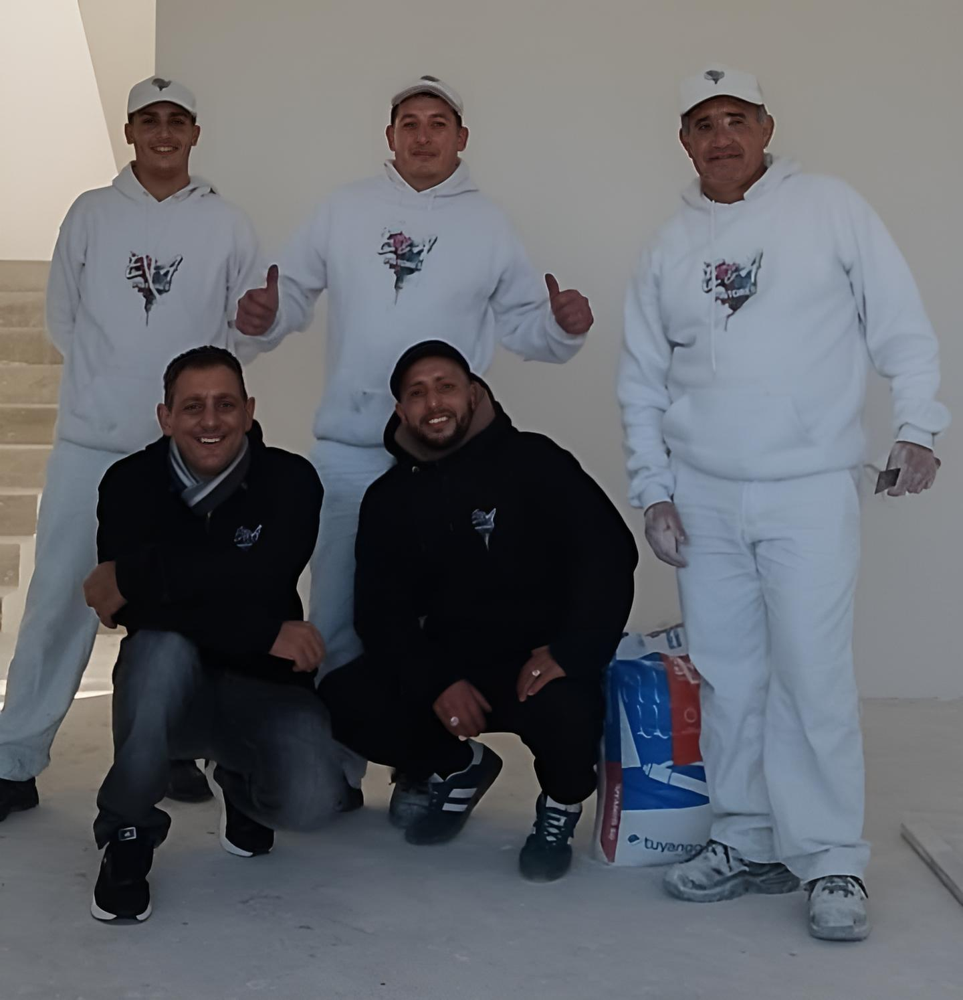

E&A Pintores - Servicios Profesionales de Pintura
Transformamos tu espacio con color y calidad
Transformamos tu espacio con color y calidad
Contamos con tecnología de avanzada y herramientas eléctricas profesionales para asegurar resultados superiores y ambientes limpios:
Ofrecemos soluciones integrales en:
Nuestro equipo está formado por oficiales profesionales y ayudantes resolutivos, organizados bajo la supervisión de un encargado de grupo y el seguimiento directo de los fundadores en cada obra. La responsabilidad, puntualidad y el respeto son los pilares con los que cumplimos cada compromiso asumido.
En E&A Pintores nos distinguimos por la alta calidad en cada proyecto. Nuestra filosofía se basa en la atención meticulosa a los detalles, garantizando acabados perfectos que se ajustan estrictamente a las demandas de nuestros clientes. Entendemos que su propiedad es su inversión más valiosa, por eso la tratamos con el máximo cuidado.
